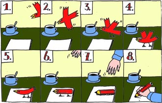

4 September 2026 · Nejvyšší správní soud
Informace o řízení a výzva k doložení osobních, majetkových a výdělkových poměrů v kasačním řízení
6 As 207/2026-13; navazuje na 15 A 44/2026-43
Evidence pageWill there be a cannabis amnesty?
LATEST VERIFIED RECORDS
102 state and public-institution records and 106 verified public PDFs are synchronized across all public surfaces.
4 September 2026 · Nejvyšší správní soud
6 As 207/2026-13; navazuje na 15 A 44/2026-43
Evidence page3 September 2026 · Okresní státní zastupitelství ve Frýdku-Místku
1 ZN 7061/2026-79
PDF document2 September 2026 · Office of the President of the Republic
KPR 5080/2026
PDF document
MAIN STORY · CANNAINSIDER NEWS · 7 AUGUST 2026 · EUROPEAN BRANCH · REPORT 07082026-011
EUDA confirmed receipt of the formal call to act under Article 265 TFEU. The European branch follows the comparability of analytical methods used to determine THC and THC/THCA.
Translation rule: Czech official records remain controlling originals. International text is explanatory only.
When: 2026-08-17
To: Supreme Public Prosecutor’s Office
For: Office for Personal Data Protection
Reference: SIN 55/2026-19 · UOOU-05841/26
From: Mgr. Dušan Dvořák
What happened: The appeal was filed on 1 August 2026; the following procedural period begins with day 1 on 2 August 2026.
Day 1: 2026-08-18
Time limit / procedural regime: Following period under the Freedom of Information Act, counted from delivery of the appeal.
When: 2026-08-15
To: Česká televize
Reference: CT 338889/2025; 10 C 69/2026
From: Mgr. Dušan Dvořák
What happened: The filing requested substantive consideration, a response and an attempt at settlement; it expressly stated that it was not a complaint under Section 175 of the Code of Administrative Procedure.
Day 1: 2026-08-16
Time limit / procedural regime: The exact period depends on the applicable procedural regime; without a documented numerical period, only elapsed time is shown.
When: 2026-08-15
Reference: bez samostatného č. j./sp. zn. v podání
What happened: Dates: 15 Aug 2026 → 24 Aug 2026.
Time limit / procedural regime: One active complaint branch.
When: 2026-08-14
To: Police Presidium of the Czech Republic
For: Internal Control Office of the Police Presidium
Reference: PPR-24960/ČJ-2026-990810; KU-4139/ČJ-2026-2305KM
From: Mgr. Dušan Dvořák
What happened: The complaint challenged the handling of point 3 of the filing of 27 May 2026 and requested review of the internal expert and control examination of THC measurement.
Day 1: 2026-08-15
Time limit / procedural regime: The exact period depends on the applicable procedural regime; without a documented numerical period, only elapsed time is shown.
When: 2026-08-12
To: Ministry of the Interior
For: Minister of the Interior
Reference: MV-127234-2/OBP-2026
From: Ganja For All Animals, z.s.
What happened: The administrative appeal was filed and delivered on 12 August 2026; that day is day 0 and 13 August is day 1.
Day 1: 2026-08-13
Time limit / procedural regime: 15 working days for the administrative appeal under Section 16(3) of the Freedom of Information Act.
When: 2026-08-11
To: Prostějov District Court
For: Brno Regional Court
Reference: against 15 Nt 3103/2026-53
From: Mgr. Dušan Dvořák
What happened: A complaint was filed against the Prostějov District Court order of 7 August 2026, ref. 15 Nt 3103/2026-53.
Day 1: 2026-08-12
Time limit / procedural regime: The exact period depends on the applicable procedural regime; without a documented numerical period, only elapsed time is shown.
When: 2026-08-10
To: KPR
Reference: KPR 5772/2026-2
From: Cannabis is The Cure, z. s.
What happened: The repeated complaint was filed on 10 August 2026; day 1 of the following period is 11 August 2026.
Day 1: 2026-08-11
Time limit / procedural regime: Seven days for full self-remedy or submission to the superior authority under Section 16a(5) of the Freedom of Information Act.
When: 2026-08-10
To: Ministry of Justice
For: Minister of Justice
Reference: MSP-162/2026-ODKA-SPZ; MSP-19/2026-ODKA-ROZ; 18 A 23/2026
From: Mgr. Dušan Dvořák
What happened: The complaint alleged failure to deal with the request of 12 July and continuing inactivity after the complaint of 15 July; it was also submitted to the Prague Municipal Court as evidence of urgency.
Day 1: 2026-08-11
Time limit / procedural regime: The exact period depends on the applicable procedural regime; without a documented numerical period, only elapsed time is shown.
When: 2026-08-10
To: Prostějov District Court
For: Brno Regional Court
Reference: against 15 Nt 3105/2026-54
From: Mgr. Dušan Dvořák
What happened: The supplement alleged that the full scope of the joint reopening application had not been decided and requested that the order be set aside and the matter reheard.
Day 1: 2026-08-11
Time limit / procedural regime: The exact period depends on the applicable procedural regime; without a documented numerical period, only elapsed time is shown.
When: 2026-08-03
To: Kancelář prezidenta republiky
Reference: KPR 5080/2026
From: Cannabis is The Cure, z. s.
What happened: The complaint challenged the accuracy, completeness and reviewability of the Office’s procedure and requested investigation and remedial measures.
Day 1: 2026-08-04
Time limit / procedural regime: The exact period depends on the applicable procedural regime; without a documented numerical period, only elapsed time is shown.
When: 2026-05-01
To: MS v Praze sp. zn. 18 A 17/2026
Reference: 18 A 17/2026
From: NCOZ
What happened: The action concerning the National Centre against Organised Crime was filed on 1 May 2026.
Time limit / procedural regime: No universal fixed statutory number of days for the merits decision is recorded; the proceeding must be conducted without undue delay.
When: 2026-08-31
Reference: nová žaloba 31. 8. 2026 · souvisící 8 Ad 9/2026-85
What happened: The earlier case ended on 28 August 2026. A new intervention action against SÚKL was filed on 31 August 2026 and expressly follows that procedural branch.
Time limit / procedural regime: Active step: the new action filed on 31 August 2026.
When: 2026-06-04
To: OS Praha 4 sp. zn. 10 C 69/2026
Reference: 10 C 69/2026
From: Česká televize
What happened: The consolidated action against Czech Television is dated 4 June 2026.
Time limit / procedural regime: No universal fixed statutory number of days for the merits decision is recorded; the proceeding must be conducted without undue delay.
When: 2026-06-15
To: MS v Praze sp. zn. 18 A 23/2026
Reference: 18 A 23/2026
From: Ministry of Justice
What happened: The source action against the Ministry of Justice is dated 15 June 2026.
Time limit / procedural regime: No universal fixed statutory number of days for the merits decision is recorded; the proceeding must be conducted without undue delay.
When: 2026-08-07
To: OS Prostějov
Reference: including 15 Nt 3103/2026-53 · 15 Nt 3105/2026-54
From: obnova řízení 2026: stížnostní fáze po rozhodnutích ze 7. 8. 2026
What happened: The District Court decided the reopening applications on 7 August 2026. Complaints followed on 10 and 11 August, and the branch is now at the complaint stage.
Time limit / procedural regime: No universal fixed statutory number of days for the merits decision is recorded; the proceeding must be conducted without undue delay.
When: 2026-07-12
To: OS Prostějov
Reference: prevence 2026
From: preventivní podání 2026
What happened: The preventive filing to the Prostějov District Court and the Police is dated 12 July 2026.
Time limit / procedural regime: No universal fixed statutory number of days for the merits decision is recorded; the proceeding must be conducted without undue delay.
When: 2026-09-01
Reference: 15 A 44/2026-43 · kasační stížnost 1. 9. 2026
What happened: The Prague Municipal Court rejected the action by order 15 A 44/2026-43 on 25 August 2026. A cassation complaint was filed on 1 September 2026.
Time limit / procedural regime: Active step: cassation proceedings before the Supreme Administrative Court.
When: 2025-07-29
To: MS v Praze sp. zn. 45 T 1/2024
Reference: 45 T 1/2024 · VS Praha 11 To 88/2024-2990
From: nové projednání po vrácení Vrchním soudem
What happened: On 29 July 2025, the Prague High Court set aside parts of the judgment of 7 May 2024 and returned the matter to the first-instance court.
Time limit / procedural regime: No universal fixed statutory number of days for the merits decision is recorded; the proceeding must be conducted without undue delay.
When: 2026-07-22
To: KS Ostrava / OS Ostrava
Reference: 15 T 11/2025 · St 82/2026
From: stížnost ve věci 15 T 11/2025
What happened: The complaint against the order of 14 July 2026 was lodged through the Ostrava District Court on 22 July and supplemented on 23 July 2026.
Time limit / procedural regime: No universal fixed statutory number of days for the merits decision is recorded; the proceeding must be conducted without undue delay.
When: 2026-07-14
Reference: 6 NZN 1737/2026
What happened: One procedural branch. Dates: 14 Jul 2026 → 25 Jul 2026 → 27 Jul 2026 → 29 Jul 2026 → 1 Aug 2026 → 15 Aug 2026 → 22 Aug 2026 → 28 Aug 2026.
Time limit / procedural regime: Latest voluntary deadline for the final position: 11 September 2026.
When: 2026-08-07
To: EUDA
Reference: čl. 265 SFEU · nařízení (EU) 2023/1322 · e-mail EUDA bez samostatného č. j.
From: výzva k jednání podle čl. 265 SFEU
What happened: Dušan Dvořák sent EUDA a formal call to act on 7 August 2026 at 09:14; EUDA acknowledged receipt that day at 17:06:35.
Time limit / procedural regime: Two months under Article 265 TFEU; acknowledgement of receipt is not itself a substantive position.
When: 2026-08-03
Reference: KPR 5080/2026
What happened: Complaint/addenda dates: 3 Aug 2026.
Time limit / procedural regime: One active complaint branch; later supplements do not create duplicate timers.
When: 2026-08-24
Reference: KRPT-203594-8/ČJ-2026-0700KR · odvolání 24. 8. 2026
What happened: Request filed and delivered 27 July; response and decision issued 20 August; appeal filed and delivered 24 August.
Time limit / procedural regime: Active stage: appeal under Section 16 of the Freedom of Information Act.
When: 2026-09-01
Reference: MK-S 6893/2026 SOCNS · MK 53547/2026 SOCNS · MK 53559/2026 SOCNS
What happened: The Ministry stopped the new-proceedings case by order MK 53547/2026 SOCNS and issued statement MK 53559/2026 SOCNS on 31 August. A remonstrance and its supporting statement were filed and delivered on 1 September.
Time limit / procedural regime: Active stage: remonstrance under Section 152 of the Administrative Procedure Code.
When: 2026-08-12
To: InfZ
Reference: § 16 a § 16a InfZ · obecná pravidla počítání času
From: jednotné pravidlo počátku procesních lhůt
What happened: For a documented data-box filing, the delivery date is day 0 and the following day is day 1; the applicable period depends on the specific remedy.
Time limit / procedural regime: The applicable period depends on the documented procedural regime.
When: 2026-04-27
To: NSZ
Reference: 6 NZN 1737/2026
From: podněty a přezkumná větev 6 NZN 1737/2026
What happened: The canonical case register records the review branch as open since 27 April 2026.
Time limit / procedural regime: No universal fixed statutory number of days for completion of this review or supervision is documented.
When: 2026-06-11
To: MSZ v Praze sp. zn. 3 KZN 197/2026
Reference: 3 KZN 197/2026 · č. j. 3 KZN 197/2026-12 · č. j. 3 KZN 197/2026-18 · související 2 KZN 55/2026
From: hlavní rozdělovací a interní větev; není totožná s jednotlivými § 16a přezkumy
What happened: On 11 June 2026, the Office divided the material received from the Supreme Public Prosecutor among several territorially and substantively responsible offices.
Time limit / procedural regime: No universal fixed statutory number of days for completion of this review or supervision is documented.
When: 2026-06-22
Reference: 1 VZN 1678/2026
What happened: Filing and supplement dates: 22 Jun 2026 → 15 Aug 2026 → 19 Aug 2026 → 25 Aug 2026 → 27 Aug 2026 → 28 Aug 2026.
Time limit / procedural regime: One active supervision/review branch.
When: 2026-07-10
Reference: 3 VZN 239/2026
What happened: Filing and supplement dates: 10 Jul 2026 → 15 Aug 2026 → 2 Sept 2026.
Time limit / procedural regime: One active supervision/review branch.
When: 2026-07-10
To: KSZ v Brně sp. zn. 1 KZT 475/2026
Reference: KSZ Brno sp. zn. 1 KZT 475/2026; č. j. 1 KZT 475/2026-32 · OSZ Prostějov č. j. 1 ZT 11/2010-752
From: přezkum postupu OSZ v Prostějově
What happened: A review request concerning the communication of 7 July 2026 was filed on 10 July 2026 and registered as 1 KZT 475/2026.
Time limit / procedural regime: No universal fixed statutory number of days for completion of this review or supervision is documented.
When: 2026-07-27
To: KSZ v Brně sp. zn. 1 KZN 1079/2026
Reference: KSZ Brno č. j. 1 KZN 1079/2026-14 · MSZ Brno č. j. 3 ZN 140/2026-3
From: přezkum postupu MSZ v Brně sp. zn. 3 ZN 140/2026
What happened: On 27 July 2026, a review was requested concerning the handling of branch 3 ZN 140/2026 and the communication of 21 July 2026.
Time limit / procedural regime: No universal fixed statutory number of days for completion of this review or supervision is documented.
When: 2026-05-27
To: Policie ČR
Reference: KU-4139/ČJ-2026-2305KM · PPR-450-8/ČJ-2026-990313
From: Kriminalistický ústav: interní odborné a kontrolní prověření
What happened: On 27 May 2026, an information request was accompanied by an express request for internal review of forensic procedures used in criminal cases from 2009 to 2019.
Time limit / procedural regime: No universal fixed statutory number of days for completion of this review or supervision is documented.
When: 2026-07-02
To: MSZ v Praze
Reference: challenged OSZ Praha 4 č. j. 1 ZN 320/2026-11 · související MSZ Praha sp. zn. 3 KZN 197/2026
From: přezkum vyřízení OSZ pro Prahu 4
What happened: On 2 July 2026, review was requested under Section 16a(7) concerning the communication of 26 June 2026, ref. 1 ZN 320/2026-11.
Time limit / procedural regime: No universal fixed statutory number of days for completion of this review or supervision is documented.
When: 2026-07-29
To: MSZ v Praze
Reference: challenged OSZ Praha 7 č. j. ZN 87/2026-47 · související MSZ Praha sp. zn. 3 KZN 197/2026
From: přezkum vyřízení OSZ pro Prahu 7
What happened: On 29 July 2026, review was requested concerning the communication of 28 July 2026, ref. ZN 87/2026-47.
Time limit / procedural regime: No universal fixed statutory number of days for completion of this review or supervision is documented.
When: 2026-08-01
To: MSZ v Praze
Reference: challenged OSZ Praha 2 č. j. 1 ZN 157/2026-33 · související MSZ Praha sp. zn. 3 KZN 197/2026
From: přezkum vyřízení OSZ pro Prahu 2
What happened: A joint filing addressed on 1 August 2026 expressly requested review of the communication of 30 July 2026, ref. 1 ZN 157/2026-33.
Time limit / procedural regime: No universal fixed statutory number of days for completion of this review or supervision is documented.
When: 2010-10-06
To: Trestní podněty
Reference: since 6. 10. 2010
From: tvrzená a archivně dokládaná kontinuita
What happened: The date comes from the author’s long-term evidence collection; every individual complaint must remain linked to a specific record.
Time limit / procedural regime: Historical evidence branch; the timer does not prove an offence or inactivity in every individual filing.
When: 2011-05-11
To: Podání označující § 149 odst. 3–5 trestního zákoníku
Reference: since 11. 5. 2011
From: recorded participant
What happened: The author identifies this date for the evidence branch invoking Section 149(3)–(5); the timer does not confirm that legal classification.
Time limit / procedural regime: Historical evidence branch; the timer does not prove an offence or inactivity in every individual filing.
TRACKED DATES
PRAGUE MUNICIPAL PUBLIC PROSECUTOR
MINISTRY OF CULTURE
LOCAL EVIDENCE DESK
Binding rule
Available now
SUPPORT THE EVIDENCE MEMORY
Account: 2200420877/2010
IBAN: CZ412010000002200420877